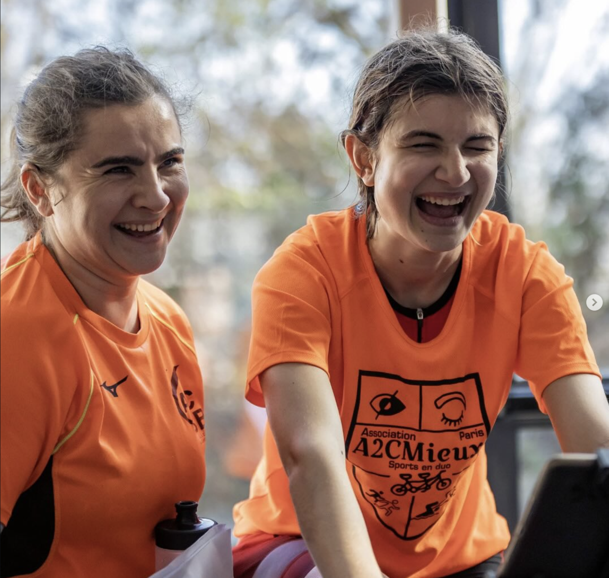
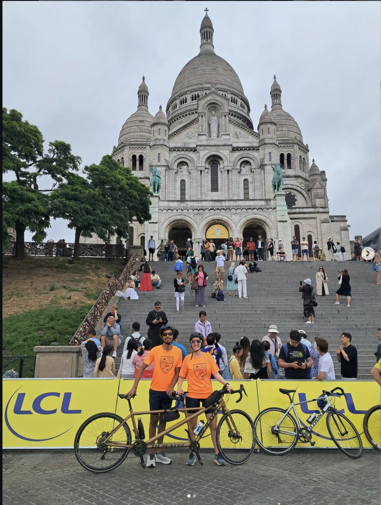
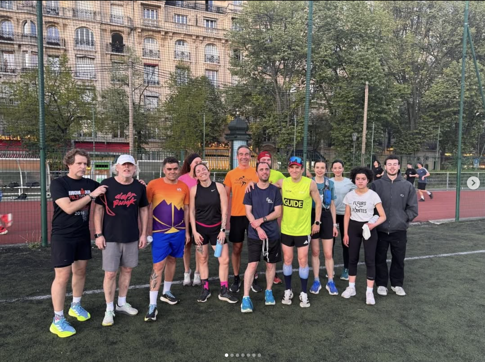

Des Duos Sportifs
Chaque duo associe un guide bénévole et une personne déficiente visuelle, dans un binôme harmonieux et adapté au niveau de chacun·e.
A2CMieux forme des Duos Sportifs — un guide et une personne déficiente visuelle — pour rendre le vélo, la natation, la course à pied et le triathlon accessibles à toutes et à tous.

Notre raison d'être
A2CMieux est une association, mais c'est avant tout un club sportif qui favorise toute activité sportive ou de loisir organisée par ou pour des personnes atteintes de déficience visuelle. Quels que soient votre niveau, vos besoins ou votre projet, nous vous accompagnons.
Chaque duo associe un guide bénévole et une personne déficiente visuelle, dans un binôme harmonieux et adapté au niveau de chacun·e.
Initiation, pratique loisir, reprise d'activité, entraînements réguliers ou préparation aux compétitions : à vous de choisir.
Une équipe soudée, bienveillante et 100% bénévole, ouverte à toutes et à tous, adolescents comme adultes.

Nos sports
Nous formons des duos adaptés dans plusieurs disciplines. Envie de tester ? Nous mettons tout en œuvre pour réaliser votre projet sportif.

Devenez guide
Nos Duos Sportifs ne peuvent exister sans guides. Pour ne pas solliciter constamment les mêmes personnes et composer des binômes harmonieux, il est primordial d'avoir de nouveaux guides, dans toutes les disciplines.
Aucune expérience particulière n'est requise : nous formons et accompagnons chaque guide.
Que vous soyez déficient·e visuel·le, guide bénévole ou simplement motivé·e, il y a une place pour vous chez A2CMieux. Le sport, ça se vit mieux à deux !